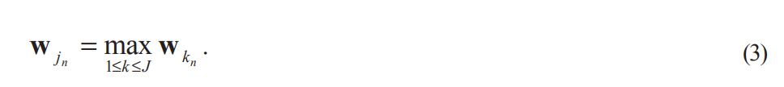
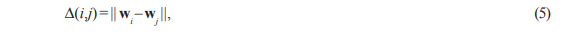
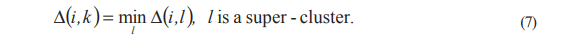
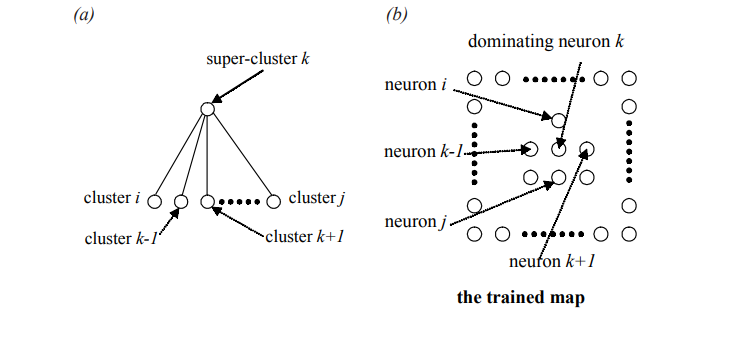
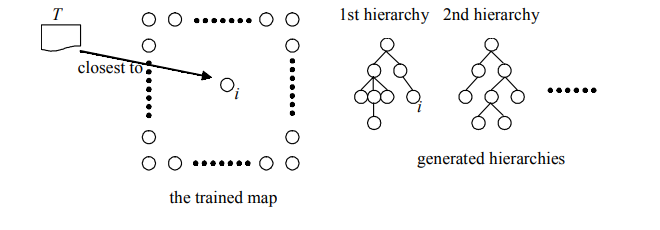

<html>
<head lang="en">
 <title>XML SAMPLE</title>
 <meta charset="utf-8">
 <meta name="viewport" content="width=device-width,initial-scale=0.1">
 <link rel="stylesheet" href="style.css">
</head>
<body>
    <h5>206 Yang & Lee</h5>
    <p style="text-align: justify">ith document to the jth neuron if they satisfy Eq. 1. After the labeling process, each document
is labeled to some neuron or, from a different viewpoint, each neuron is labeled with a set of
documents. We record the labeling result and obtain the DCM. In the DCM, each neuron is
        labeled with a list of documents that are considered similar and are in the same cluster.</p>
    
     <p>&nbsp;&nbsp;&nbsp;&nbsp;We explain why the SOM algorithm performs a clustering process here. In the labeling
process, those documents that contain similar words will map to the same or neighboring
neurons. Since the number of the neurons is usually much smaller than the number of the
documents in the corpus, multiple documents may label to the same neuron. Thus, a neuron
forms a document cluster. In addition, neighboring neurons represent document clusters of
similar meaning, i.e., high word co-occurrence frequency in our context. On the other hand,
it is possible that some neurons may not be labeled by any document. We call these neurons
the unlabeled neurons. Unlabeled neurons exist when one of two situations occur: 1) when
the number of documents is considerably small compared to the number of neurons; or 2)
when the corpus contains too many conceptually similar documents such that a great part
of documents will fall into a small set of neurons. However, unlabeled neurons will not
diminish the result of the clustering since they do not affect the similarity measurement
between any pair of clusters.</p>
       <p>&nbsp;&nbsp;&nbsp;&nbsp;The map forms the WCM by labeling each neuron with certain words. This is achieved
by examining the neurons’ synaptic weight vectors. The labeling process is based on the
following observations. Since we use binary representation for the document feature vectors,
ideally the trained map should consist of synaptic weight vectors with component values near
either 0 or 1. Since a value of 1 in a document vector represents the presence of a corresponding
word in that document, a component with value near 1 in a synaptic weight vector also shows
that such neuron has recognized the importance of the word and tried to “learn” the word.
According to such interpretation, we design the following word labeling process. For the
weight vector of the jth neuron wj
, if its nth component exceeds a predetermined threshold,
the corresponding word of that component is labeled to this neuron. To achieve a better result,
the threshold is a real value near 1. By virtue of the SOM algorithm, a neuron may be labeled
by several words that often co-occurred in a set of documents. Thus, a neuron forms a word
cluster. The labeling method may not completely label every word in the corpus. We call these
words the unlabeled words. Unlabeled words happen when several neurons compete for a
word during the training process. The competition often results in imperfect convergence of
weights, As a result, some words may not be learned well; i.e., their corresponding
components may not have values near 1 in any neuron’s weight vectors. We solve this
problem by examining all the neurons in the map and labeling each unlabeled word to the
neuron with the largest value of the corresponding component for that word. That is, the nth
word is labeled to the jth neuron if</p> 
    
    <p>Note that we ignore the unlabeled neurons in Eq. 3.
    <p>&nbsp;&nbsp;&nbsp;   The WCM autonomously clusters words according to their similarity of co-occurrence.Words that tend to occur simultaneously in the same document will be mapped to neighboring
neurons in the map. For example, the translated Chinese words for “neural” and “network”
often occur simultaneously in a document. They will map to the same neuron, or neighboring
neurons, in the map because their corresponding components in the encoded document
   </p>
    <h5>Mining Text Documents for Thematic Hierarchies 207</h2>

 <p style="text-align: justify;">vector are both set to 1. Thus, a neuron will try to learn these two words simultaneously.
Conversely, words that do not co-occur in the same document will map to distant neurons
in the map. Thus, we can reveal the relationship between two words according to their
     corresponding neurons in the WCM.</p>
    <h1>DEVELOPING THEMATIC HIERARCHIES<br>
  FOR TEXT DOCUMENTS</h1>
    <p>&nbsp;&nbsp;&nbsp;After the clustering process, each neuron in the DCM and the WCM actually
represents a document cluster and a word cluster, respectively. Such clusters can be
considered as categories in text categorization of the underlying corpus. In this section,
we will describe two aspects of finding implicit structures of these categories. First, we
will present a method for revealing the hierarchical structure among categories. Second,
a category theme identification method is developed to find the labels of each category
for easy human interpretation. The implicit structures of a text corpus can then be
discovered and represented in a humanly comprehensible way through our methods.</p>       
 <h3>Automatic Category Hierarchy Generation</h3> 
    <p>&nbsp;&nbsp;&nbsp;To obtain a category hierarchy, we first cluster documents by the SOM using the
method described in last section to generate the DCM and the WCM. As we mentioned
before, a neuron in the document cluster map represents a cluster of documents. A cluster
here also represents a category in text categorization terminology. Documents labeled
to the same neuron, or neighboring neurons, usually contain words that often co-occur
in these documents. By virtue of the SOM algorithm, the synaptic weight vectors of
neighboring neurons have the least difference compared to those of distant neurons.
That is, similar document clusters will correspond to neighboring neurons in the DCM.
Thus, we may generate a cluster of similar clusters—or a super-cluster— by assembling
neighboring neurons. This will essentially create a two-level hierarchy. In this hierarchy,
the parent node is the constructed super-cluster and the child nodes are the clusters that
compose the super-cluster. The hierarchy generation process can be further applied to
each child node to establish the next level of this hierarchy. The overall hierarchy of the
categories can then be established iteratively using such top-down approach until a stop
criterion is satisfied.</p>
    <p>&nbsp;&nbsp;&nbsp;To form a super-cluster, we first define distance between two clusters:</p>
    
    <p style="text-align: justify;">where i and j are the neuron indices of the two clusters, and Gi
 is the two-dimensional grid
location of neuron i. For a square formation of neurons, Gi = (i mod J1/2,i div J1/2). D(i,j) measures
the Euclidean distance between the two coordinates Gi
 and Gj
. We also define the dissimilarity
between two clusters:</p>
    
    <h5>208 Yang & Lee</h5>
    <p style="text-align: justify">where wi
 is the weight vector of neuron i. We may compute the supporting cluster similarity
ℑi
 for a neuron i from its neighboring neurons by</p>
    
    <p style="text-align: justify">where doc(i) is the number of documents associated to neuron i in the document cluster map,
and Bi
 is the set of neuron index in the neighborhood of neuron i. The function F: R+
→R+
is a monotonically increasing function that takes D(i,j) and ∆(i,j) as arguments. The superclusters are developed from a set of dominating neurons in the map. A dominating neuron
is a neuron that has locally maximal supporting cluster similarity. We may select all dominating
neurons in the map by the following algorithm:</p>
    <ol>
     <li>&nbsp;&nbsp;Find the neuron with the largest supporting cluster similarity. Select this neuron
as dominating neuron.</li>
    <li>&nbsp;&nbsp;Eliminate its neighbor neurons so that they will not be considered as dominating
neurons</li>
    <li>&nbsp;&nbsp;If there is no neuron left or the number of dominating neurons exceeds a predetermined value, stop. Otherwise go to Step 1.</li>
    </ol>
    <p style="text-align: justify"><p style="text-align: justify"></p>
    <p>&nbsp;&nbsp;&nbsp;A dominating neuron is the centroid of a super-cluster, which contains several child
clusters. We will use the neuron index of a neuron as the index of the cluster associated
with it. For consistency, the neuron index of a dominating neuron is used as the index
of its corresponding super-cluster. The child clusters of a super-cluster can be found by
the following rule: The ith cluster (neuron) belongs to the kth super-cluster if</p>
    
    <p>&nbsp;&nbsp;&nbsp;The above process creates a two-level hierarchy of categories. In the following, we
will show how to obtain the overall hierarchy. A super-cluster may be thought of as a
category that contains several sub-categories. In the first application of the supercluster generation process (denoted by STAGE-1), we obtain a set of super-clusters.
Each super-cluster is used as the root node of a hierarchy. Thus the number of generated
hierarchies is the same as the number of super-clusters obtained in STAGE-1. Note that
        we can put these super-clusters under one root node and obtain one single hierarchy by</p>
    <h5>Mining Text Documents for Thematic Hierarchies 209</h5>
    <p style="text-align: justify;"><i>Figure 2: (a) A two-level hierarchy comprises a super-cluster as root node and several
clusters as child nodes. (b) The dominating neuron k is selected and used as a supercluster. Its neighboring neurons compose the super-cluster. We only show a possible
        construction of the hierarchy here</i></p>
    
    <p>&nbsp;&nbsp;&nbsp;setting a large neighborhood in Step 2 of the hierarchy generation algorithm. However,
we see no advantage to doing this because the corpus generally contains documents of
a wide variety of themes. Trying to put all different themes under a single general theme
        should be considered meaningless.</p>
<p>&nbsp;&nbsp;&nbsp;To find the children of the root nodes obtained in STAGE-1, we may apply the supercluster generation process to each super-cluster (STAGE-2). Notice that in STAGE-2, we only
consider neurons that belong to the same super-cluster. A set of sub-categories will be
obtained for each hierarchy. These sub-categories will be used as the third level of the
hierarchy. The overall category hierarchy can then be revealed by recursively applying the
same process to each newfound super-cluster (STAGE-n). We decrease the size of
neighborhood in selecting dominating neurons when the super-cluster generation process
proceeds. This will produce a reasonable number of levels for the hierarchies, as we will
    discuss later.</p>
<p>&nbsp;&nbsp;&nbsp;Each neuron in the trained map will associate with a leaf node in one of the generated
hierarchies after the hierarchy generation process. Since a neuron corresponds to a document
cluster in the DCM, the developed hierarchies naturally perform a categorization of the
documents in the training corpus. We may categorize new documents as follows. An
incoming document A with document vector xA is compared to all neurons in the trained map
to find the document cluster to which it belongs. The neuron with synaptic weight vector that
is the closest to xA will be selected. The incoming document is categorized into the category
where the neuron has been associated with a leaf node in one of the category hierarchies.
This is depicted in Figure 3. In the figure, document A is the closest to neuron i, which is in
    the third level of the first hierarchy. Therefore, A will be categorized in the category that neuron</p>
    
<h5>210 Yang & Lee</h5>
<center>
 
    </center>
 <P style="text-align: justify">i represents. Its parent categories as well aschild categories, if any, can be easily obtained.
Through this approach, the task of text categorization has been done naturally by the
category hierarchy generation process</P>
  <P>&nbsp;&nbsp;&nbsp;The neighborhood Bi
 in calculating supporting cluster similarity of a neuron i may be
arbitrarily selected. Two common selections are circular neighborhood and square
neighborhood. In our experiments, the shapes of the neighborhood are not crucial. It is the
sizes of the neighborhood, denoted by Nc1
, that matter. Different sizes of neighborhoods may
result in different selections of dominating neurons. Small neighborhoods may not capture
the necessary support from similar neurons. On the other hand, without proper weighting,
a large Nc1
 will incorporate the support from distant neurons that may not be similar to the
neuron under consideration. In addition, large neighborhoods have the disadvantage of
costing much computation time.</P>
    <p>&nbsp;&nbsp;&nbsp;Neighborhoods are also used to eliminate similar clusters in the super-cluster generation
process. In each stage of the process, the neighborhood size, denoted by Nc2
, has a direct
influence on the number of dominating neurons. Large neighborhoods will eliminate many
neurons and result in less dominating neurons. Conversely, a small neighborhood produces
a large number of dominating neurons. We must decrease the neighborhood size when the
process proceeds because the number of neurons under consideration is also decreased</p>
    <p>&nbsp;&nbsp;&nbsp;In Step 3 of the super-cluster generation process algorithm, we set three stop criterions.
The first criterion stops finding super-clusters if there is no neuron left for selection. This is
a basic criterion, but we need the second criterion—which limits the number of dominating
neurons— to constrain the breadth of hierarchies. The lack of the second criterion may result
in shallow hierarchies with too many categories in each level if the neighborhood size is
considerably small. An extreme case happens when the neighborhood size is 0. In such a case,
Step 2 of the algorithm will not eliminate any neuron. As a result, every neuron will be selected
as dominating neurons, and we will obtain J single level hierarchies. Determining an adequate
neighborhood size and a proper number of dominating neurons is crucial to obtaining an
acceptable result. The third criterion constrains the depth of a hierarchy. If we allow a
hierarchy having large depth, then we will obtain a set of “slimy” hierarchies. Note that setting
large depths may cause no effect because the neighborhood size and the number of
dominating neurons may already satisfy the stop criterion. An ad hoc heuristic rule used in
our experiments is to determine the maximum depth d if it satisfies the following rule:</p>
 
</body>
</html>